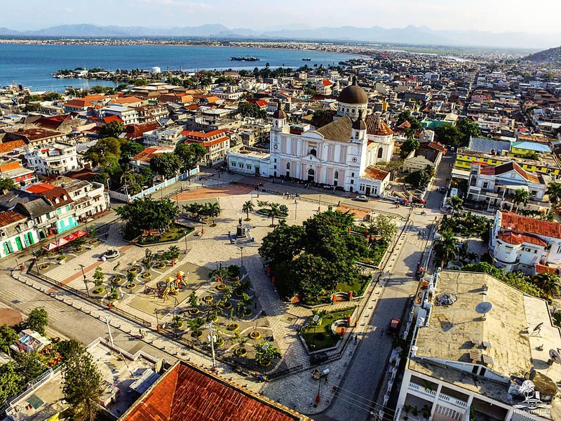
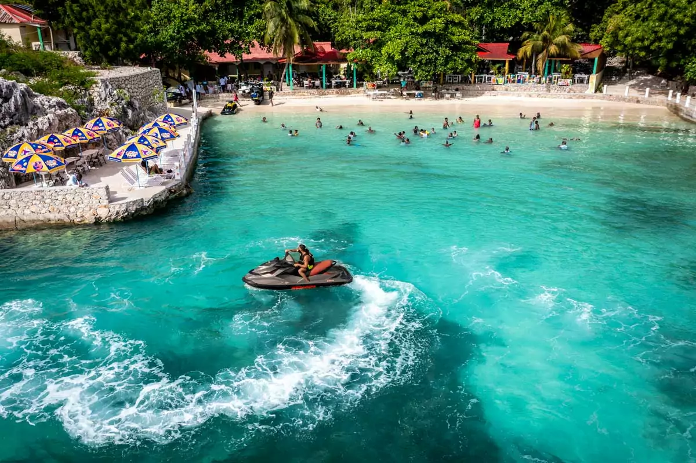
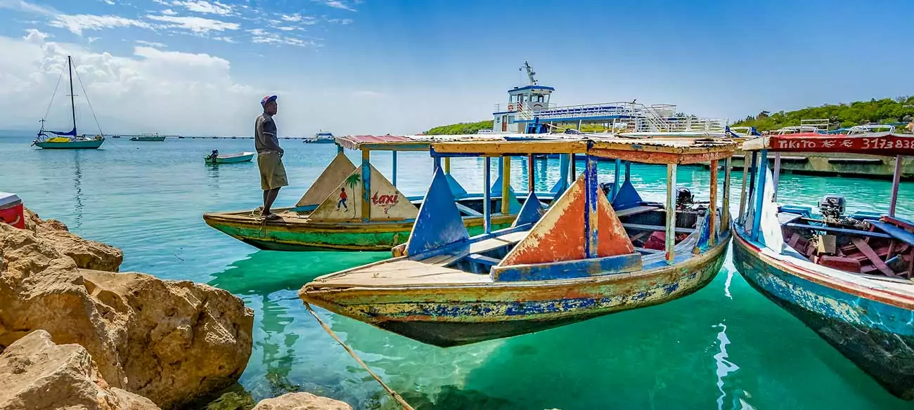

FAVORITE CITY
My FAVORITE CITY
Cap-Haïtien is a historic city located in the northern part of Haiti. Known for its
colonial architecture and beautiful coastal views, it holds great cultural and
historical value. The city is close to the famous Citadelle Laferrière, a UNESCO World
Heritage site. Cap-Haïtien is peaceful, welcoming, and full of charm. It’s a place where
history meets natural beauty,making it one of my favorite cities in Haiti."

CAP HAITI
Cap-Haïtien, often called "La Perle du Nord", is one of Haiti’s most beautiful and
historic tourist cities. With its rich colonial architecture, cobblestone streets,
and
colorful buildings, it offers a unique charm that takes visitors back in time. From
the iconic "Citadelle Laferrière" a UNESCO World Heritage Site to the stunning
"Labadee
beach", Cap-Haïtien blends culture, history, and natural beauty. Tourists are drawn
to its vibrant markets, friendly locals, and delicious Creole cuisine. It’s not just
a city; it’s a living museum, where every corner tells a story.

